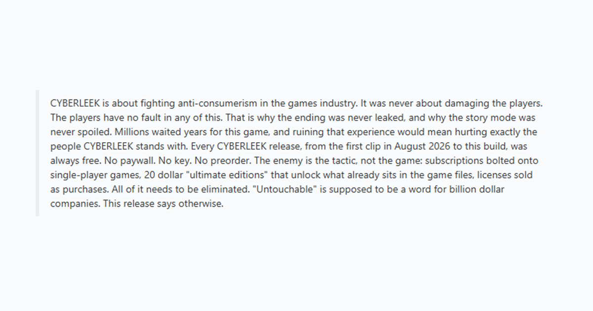
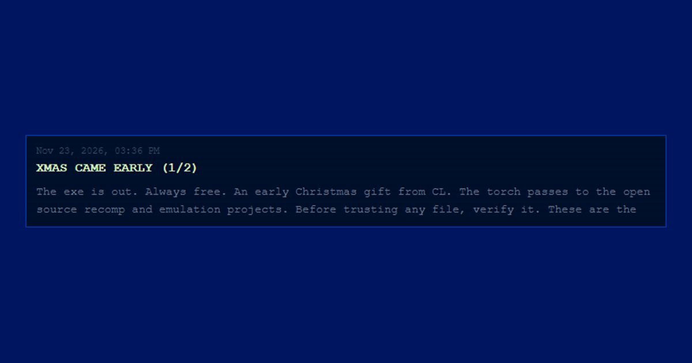

GTA VI PC footage shows sunlight and working lamps
A new 17-second clip shows bright light on Lucia and visible ceiling lamps, while much of the room stays almost black. The exact build is unconfirmed.
What's happening
The moves that matter around the leak: takedowns, confirmed leaks, legal news and scams. Short summaries in our own words, with links to the original reporting.
 Port
PortA new 17-second clip shows bright light on Lucia and visible ceiling lamps, while much of the room stays almost black. The exact build is unconfirmed.
VICEPULSE is watching for a documented 30-minute gameplay run after a fast jump from menus to the game world.
 Port
PortA private build based on VIctory and XCL lets a player walk around and talk to NPCs, very slowly. A video shows the opening scenes in flat colours, without lighting.
The team refused to say more for fear of being nuked, but hinted to one of our members that it's working really well. Update: testers' reports now show it loading into the world.
Overnight, a Linux-first layer showed GTA VI's player-selection prompt, VIctory reported a title card inside the game world, and two smaller projects got GTA VI's code running.
Within an hour on Monday night the biggest GTA VI port lost its Discord server and its GitHub repository, and its creator said he was stepping away.
The 179,000-member server stopped resolving late on Monday. Members say Discord banned it; nobody has said why. Update: the GitHub repository has since been deleted too.
 Port
PortHe has since published the code as VIctory, but nobody else has reproduced the run yet. Viewers who studied the stream think it is most likely real.
Contributors' builds run the game's own code for minutes behind a blank window; posts in its Discord say it won't be playable today, but maybe tomorrow.

LeakA note said to ship with the executable says donations fund a secret project and counts every token trade as a vote. None of it can be checked.

LeakThe leaker posted the release at 15:36 CET. Nobody has confirmed the file is genuine yet, and no project has booted the game.
The suspension is real, but the cause isn't public, and an account blaming the two companies also promotes a crypto token.
The Wine-style layer says Minecraft Preview is fully playable on Windows. GTA VI still can't start, because its executable is missing.
 Leak
LeakCyberleek's countdown ends at 17:00 UTC on Nov 23 while its site charges for poll votes; the early-release token goal is reportedly down to $6 million.
On its first run, our scout found three copies of Leonida under other accounts. One had been renamed and given a vague description.
 Leak
LeakThe leaker says the missing executable will be released on Monday, Nov 23, or sooner if its meme coin reaches a $15 million market cap.
 Security
SecuritySecurity firms have tracked tens of thousands of GTA VI malware detections, and a ready-made scam kit is for sale on the dark web.
 Takedown
TakedownFour DMCA notices, filed the day before GTA VI launched, took down unofficial GTA V ports along with hundreds of forks.
 Legal
LegalArion Kurtaj admitted hacking Rockstar and posting about 90 development clips. His sentencing falls on the same day as Cyberleek's executable deadline.